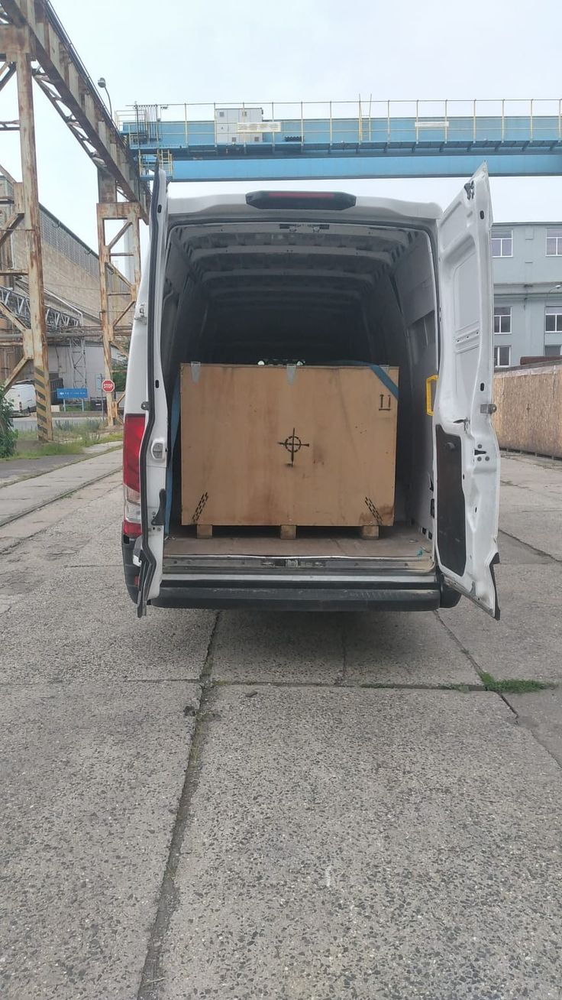
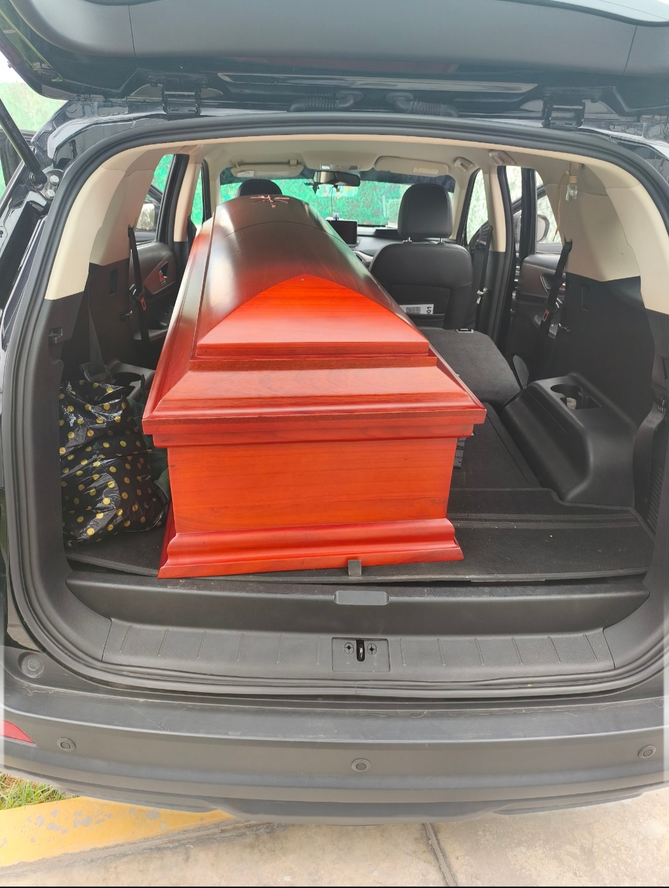

Servicio de traslado terrestre
Entendemos la importancia de que su ser querido viaje protegido y con la mayor dignidad. Por ello, ponemos a su disposición una flota moderna de vehículos homologados y carrozas fúnebres de primer nivel, diseñadas exclusivamente para garantizar la seguridad en cada kilómetro. Nuestro equipo de conductores profesionales estan altamente capacitados en el trayecto vial, encargándose de toda la logística de la ruta, desde el punto de partida hasta su destino final, para que su familia no tenga que preocuparse por ningún detalle en el camino y pueda llegar a la provincia deseada.
Solicitar información

¿Qué incluye?
- Flota moderna de vehículos homologados
- Carrozas fúnebres de primer nivel
- Conductores profesionales y capacitados
- Logística completa de la ruta
- Atención desde el punto de partida hasta el destino final
- Embalsamamiento y permisos de traslados